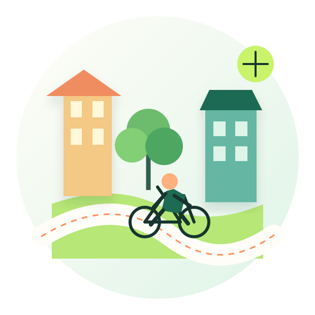

Bicicleta
Bicicleta
Circuito Aire Limpio
Un recorrido accesible que conecta ciclovías, arte urbano y zonas arboladas.
Conocer ruta ↗Movilidad con propósito
Descubre ciclovías, jardines urbanos y proyectos locales en recorridos breves pensados para cuidar de ti y del lugar donde vives.

Selección local
Bicicleta
Un recorrido accesible que conecta ciclovías, arte urbano y zonas arboladas.
Conocer ruta ↗ Naturaleza
Naturaleza
Visita huertos comunitarios y aprende cómo pequeñas acciones regeneran la ciudad.
Conocer ruta ↗ Comunidad
Comunidad
Productores, talleres y sabores que mantienen viva la economía de barrio.
Conocer ruta ↗Una idea que puede crecer
EcoRuta es una maqueta web pensada para evolucionar. En una siguiente etapa podría guardar rutas favoritas, usar ubicación, funcionar sin conexión y enviar recordatorios sobre actividades cercanas.
Tu próximo recorrido